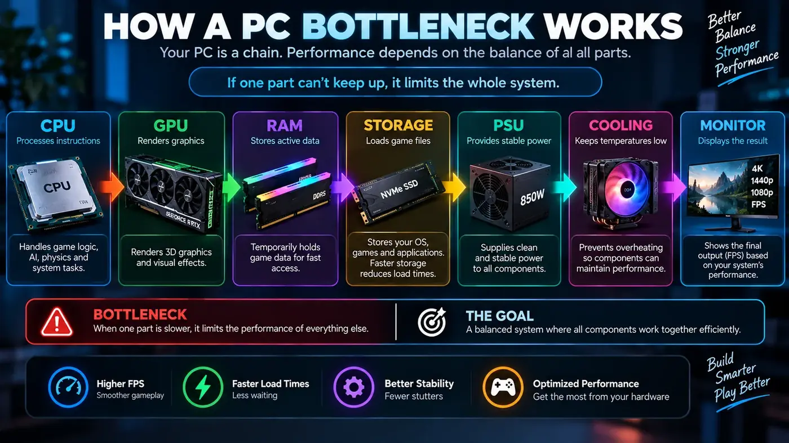

How to Choose a Gaming CPU: Cores, Cache, Clocks and GPU Pairing
A practical guide to choosing a gaming CPU based on resolution, refresh rate, games, graphics card, platform cost and the other work you do on your PC.

Start with the gaming experience you want
Choosing a gaming CPU is easier when you start with the experience rather than a product list. Decide whether you mainly play at 1080p, 1440p or 4K, how fast your monitor is, which games you play, and whether you also stream, edit video, compile software or run virtual machines.
A processor that is excellent for a high-refresh competitive PC may offer little practical benefit in a 4K system where the graphics card is already the main limit. Conversely, a very fast GPU paired with an entry-level processor can leave performance on the table at high frame rates.
Cores and threads
Modern games can use multiple CPU threads, but gaming performance does not increase in a simple line with core count. Game engines divide work differently, and some workloads depend heavily on a smaller number of important threads.
Additional cores become more useful when the PC does more than run the game. Streaming, recording, browser tabs, voice chat, content creation, software development and other background tasks can all compete for processor resources. Think about the entire workload rather than the game alone.
Clock speed is only one part of CPU performance
CPU clock speed is easy to compare, but it is not enough by itself. Architecture, instructions per clock, cache, memory latency, power behavior and the way a particular game uses the processor all affect real performance.
This is why comparing two CPUs only by their advertised GHz number can lead to poor conclusions. Look for independent gaming benchmarks that match the games and resolution you care about, and consider the complete platform cost.
Why CPU cache can matter in games
Cache keeps frequently accessed data close to the processor cores. Some game engines benefit strongly from larger or better-organized caches because the CPU repeatedly works with game-state data, simulation information and other frequently accessed values.
Cache is not a universal shortcut to higher FPS, but it is one of several architectural features that can explain why two CPUs with similar clock speeds perform differently in a game.
Match the CPU to the GPU
A sensible CPU and GPU pairing depends on the resolution and frame-rate target. At 1080p with a high refresh rate, CPU performance can matter more because the GPU has fewer pixels to render. At 1440p and 4K, the GPU often carries a larger portion of the rendering workload.
This does not mean a CPU becomes irrelevant at high resolution. Game simulation still runs on the processor, and some titles remain CPU-heavy regardless of resolution.
Gaming CPU for 60 Hz, 144 Hz and 240 Hz PCs
A 60 Hz monitor changes the target compared with a 144 Hz or 240 Hz display. If your goal is a stable 60 FPS, spending heavily to gain additional CPU headroom may not change the experience much when the GPU is already the limiting factor.
High-refresh gaming is different. When you are trying to sustain 144, 180 or 240 FPS, the time available to prepare each frame becomes much smaller. CPU architecture and latency can therefore matter more, especially in competitive games.
Consider the motherboard and platform
The processor is only one part of the platform. Check motherboard compatibility, memory support, BIOS requirements, upgrade options, power delivery and the price of the complete combination. A cheaper CPU that requires an expensive platform may not actually be the better value.
Platform longevity can also matter if you plan to upgrade the processor later. On the other hand, if you keep a PC for many years without upgrading, paying extra for an upgrade path may have limited value.
CPU cooling matters
A CPU needs adequate cooling to maintain its intended performance under sustained load. A processor that repeatedly reaches its thermal limits can reduce clock speed. Cooling also affects noise, so the “best” CPU on paper may not produce the best overall PC experience if the cooling solution is poorly matched.
When building or upgrading, budget for a cooler appropriate to the processor's power behavior and your case airflow.
When more CPU cores are worth paying for
- Heavy multitasking while gaming.
- Game streaming or recording.
- Video editing and media encoding.
- 3D rendering.
- Software development and large builds.
- Virtual machines and container workloads.
If your PC is mainly used for web browsing, office work and gaming, the value of additional cores can be different from that of a workstation user. Spend according to the workload you actually have.
How to compare CPUs without getting trapped by specifications
Start with independent benchmarks for the games you play. Check average FPS and, where available, low-percentile results or frame-time graphs. Look at the resolution used in the benchmark. A CPU that wins at 1080p may show a much smaller difference at 4K when the GPU becomes the dominant limit.
Then compare total platform cost, cooling requirements, motherboard features and power consumption. A small benchmark lead does not necessarily justify a large price difference.
CPU bottleneck checks before an upgrade
If your existing PC feels slow in games, measure before buying. Watch GPU utilization, CPU utilization by core, clocks, temperatures, RAM usage and frame time. Lowering the resolution is another useful experiment. If FPS barely changes while GPU utilization remains relatively low, the CPU or another system limit may be important.
Common CPU buying mistakes
- Buying by core count alone.
- Comparing clock speed without considering architecture.
- Ignoring the graphics card and monitor target.
- Forgetting motherboard and memory costs.
- Choosing a CPU without planning cooling.
- Assuming a bottleneck percentage is a permanent truth for every game.
- Paying for workstation features that the actual workload never uses.
Think about the games you actually play
Game choice matters because different engines stress different parts of a processor. Competitive shooters often reward high frame rates and low frame times. Strategy, simulation and open-world titles can place more emphasis on game-state updates, AI and simulation. A CPU recommendation that makes sense for one genre may not be the most cost-effective choice for another.
1080p and 1440p CPU considerations
At 1080p, a fast graphics card may finish its rendering work quickly enough that CPU frame preparation becomes visible. This is especially relevant if your monitor has a high refresh rate. At 1440p, the GPU generally has more work to do, so the performance gap between CPUs can narrow in many games. The exact result still depends on the title and graphics card.
What about 4K gaming?
At 4K, graphics workload usually becomes much larger. That often makes the GPU the dominant factor in average FPS, although CPU performance still matters for simulation and high minimum frame rates. Do not choose a CPU solely because a 4K benchmark shows a small difference; consider whether the graphics card will be the part you upgrade next.
Platform cost is part of CPU value
When comparing processors, add the motherboard, memory and cooler to the calculation. A CPU that costs less by itself can become more expensive once the complete platform is considered. BIOS compatibility and future upgrade options also deserve attention, particularly when reusing an existing motherboard.
Check independent reviews
Manufacturer specifications describe the processor, but independent testing shows how it behaves in real software. Look for multiple games, consistent test settings and information about minimum or low-percentile performance. Avoid drawing a conclusion from one benchmark or one game.
Conclusion
The best gaming CPU is the one that fits your workload, graphics card, monitor and budget. Look beyond headline specifications. Consider gaming benchmarks, cache and architecture, high-refresh performance, platform cost, cooling and the other tasks you run. Then verify any suspected CPU bottleneck with real measurements from your own games.